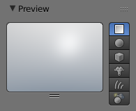
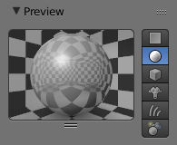
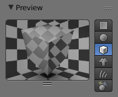
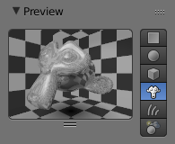
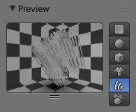
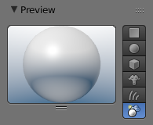

预览¶
预览面板提供了对活动材质及其属性的快速预览。包含其 着色器, 渐变, 镜射, 透明 属性和 贴图 。提供了数个形状预览，对于设计新的着色器很有用：对于一些着色器(如基于 渐变 色的着色器，或者 明纳尔特 散射)，可能需要相对复杂或者指定的预览形状，以确定所设计的着色器能否获得预期效果。
选项¶
- 平展
- 用于预览扁平物体的问题和材质，如墙面、纸张等。
- 球形
- 用于预览类球物体的纹理和材质，由于棋盘格背景，也可以用于设计金属和其他反光/透明材质，
- 立方体
- 用于预览类方块物体的纹理和材质，也可以用于设计程序纹理。棋盘格背景。
- 猴头
- 用于预览有机体和非基础形状的纹理和材质。棋盘格背景。
- 毛发
- 用于预览类线股物体的纹理和材质，如草地，毛皮和头发。棋盘格背景。
- 世界天球
- 用于预览类球物体的纹理和材质，由于渐变天空背景背景，也可以用于设计金属和其他反光材质，
示例¶

平展预览。 |

球形预览。 |

立方体预览。 |

猴头预览。 |

毛发预览。 |

天球预览。 |